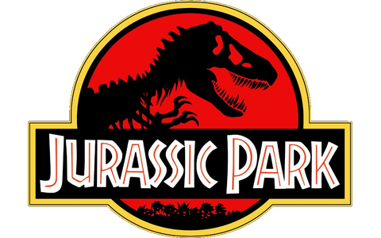
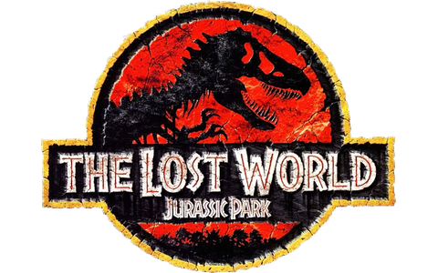
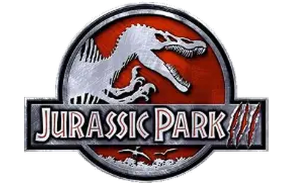

01
1993
Jurassic Park
A aventura que abriu os portões do parque.



A saga em ordem de lançamento
Sete filmes. Mais de três décadas de aventuras. Escolha um trailer e reviva cada capítulo.
A aventura que abriu os portões do parque.
Uma nova expedição revela os segredos da ilha.
Uma missão de resgate vira luta pela sobrevivência.
O parque finalmente abre — mas nem tudo sai como planejado.
Uma corrida contra o tempo para salvar os dinossauros.
Humanos e dinossauros dividem o mesmo mundo.
Uma nova expedição parte rumo a territórios desconhecidos.